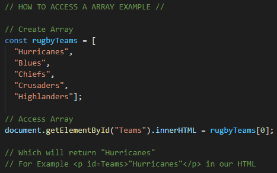
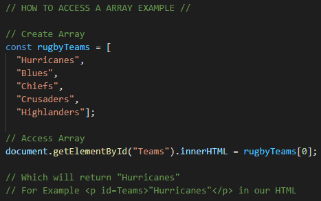

The Dom
An analogy to describe the differences between HTML and CSS
An anology I can think of is HTML and CSS are like a car, HTML is like the structure of the car and CSS is the contents of the car like the color of the car the type of seats ect. HTML gives the car its shape and frame while CSS gives the car its look and style.
Explain control flow and loops using an example process from everyday life, for example, 'waking up' or 'brushing your teeth. (But not those).
I guess control flow is like making Wine, there are crucial steps to follow when making wine Harvesting, crushing and pressing, fermenting, clarification and aging, and bottling. And loops is just repeating this process over and over with different varieties of grapes.
Describe what the DOM is and an example of how you might interact with it.
The Dom or known as Document Object Model is a programming interface for HTML.
With the dom we can use Javascript to access and change elements of a document. Everytime a page is loaded a Document Object Model is loaded and the Dom is constructed like a tree like the example below.
The Dom is great to interact with because with it we can manupulate differnt nodes, we can move and remove different elements or even styles without actually affecting the code, its a good tool to use when you want to test something.

The Dom allows us to manipulate the webpage either in the HTML source code or in the browser window or both, we can use javascript to change things like elements or attributes on a page or add elements or attributes to a page.
Explain the difference between accessing data from arrays and objects.
Imagine having two different folders and in one folder you had folders name 1,2,3,4,5 but in the second folder you had folders named assignments, case studies, research,notes,learning plan. The numbered folders are arrays and we know this because they are in order and the values are surrounded by []. The other folder in the other hand is a object we know this because the list is unordered and because they are surrounded with {}. We can access a array using the document.getElementById("exampleID").innerHTML = arrayhere;, we can also access a object using the Below I made a example of how you can access both a array and a object.
 

Explain what functions are and why they are useful.
A Function is exactly what it is, it is a block of code designed to perform a function or task. It is pretty much a set of statements that will perform a function or task or even calculate a value. A input is usually required in order for it to make a output. They are very useful as you can reuse the same code and be called upon anytime.